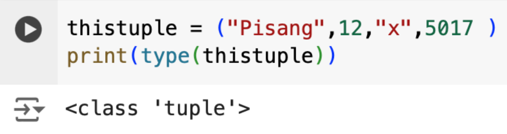

• Tuple digunakan untuk menyimpan beberapa item pada sebuah variabel
• Data-data yang ada di dalam tuple tidak akan bisa dirubah baik nilainya maupun urutannya.
• Tuple ditandai dengan menggunakan tanda kurung “( )”
Berikut contoh pembuatan tuple
Tuple memperbolehkan ada data yang sama di dalamnya.
Untuk mengetahui panjang dari sebuah tuple, dapat digunakan fungsi len()
Untuk membuat sebuah tuple dengan hanya 1 item saja, perlu ditambahkan“,” setelah item pertama.
Tuple bisa menyimpan data dengan tipe yang berbeda-beda
Pada Python, sebuah tuple akan dianggap sebagai sebuah objek yang bertipe tuple.
